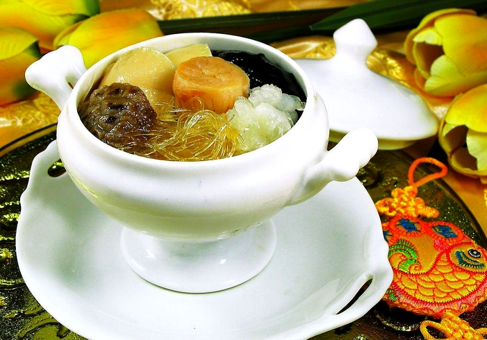
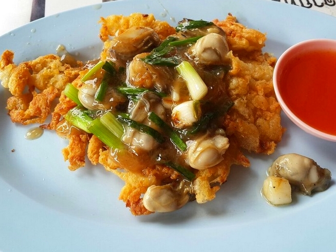
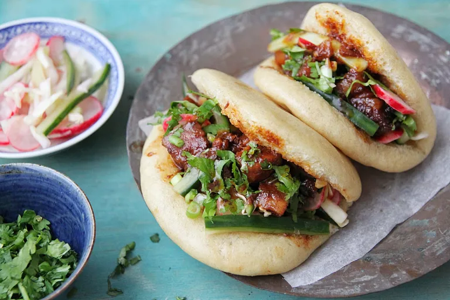

Contexte
Géographie
Le Fujian est une province principalement montagneuse. Selon un proverbe local, le Fujian est décrit comme étant « huit parts de montagnes, une part d'eau, et une part de terres cultivées ». Ces montagnes boisées abritent une grande variété de plantes et d'herbes sauvages qui sont intégrées dans la cuisine locale. Des ingrédients comme des champignons sauvages, des racines et des herbes médicinales qui s'y trouvent sont souvent utilisés pour leurs aspects gustatifs, mais aussi pour des raisons thérapeutiques et médicinales.
Le Fujian borde la mer de Chine orientale à l’est, la mer de Chine méridionale au sud, et le détroit de Taïwan au sud-est. Cette proximité de la mer favorise une large utilisation de poissons, fruits de mer, crustacés et algues dans la cuisine locale. Des poissons d'eau douce sont également utilisés en raison du fleuve Min et de ses affluents qui traversent la région.
La province du Fujian est marquée par un climat subtropical chaud et humide, avec une saison de mousson de juin à août apportant typhons et pluies torrentielles. Ce climat favorise la culture d'une large variété de produits agricoles tels que les fruits tropicaux, divers légumes, le riz et le réputé thé oolong.
Histoire
La cuisine du Fujian possède une longue histoire. Depuis la fin de la dynastie Jin occidentale (266-420), de nombreuses personnes originaires des plaines centrales se sont installées au Fujian, où la cuisine locale a commencé à prendre forme. Grâce à ses nombreux ports commerciaux d'importance internationale, Quanzhou est devenue le point de départ de la route maritime de la soie sous la dynastie Song (960–1279).
La cuisine du Fujian a ainsi intégré des techniques culinaires d’autres régions et s'est développée rapidement. Le commerce international a également introduit des condiments tels que le saté, la moutarde, le curry et d'autres assaisonnements, qui sont devenus des éléments essentiels de la cuisine fujianaise.
À la fin de la dynastie Qing, plusieurs restaurants caractéristiques et artisans talentueux ont émergé au Fujian, toujours soucieux de créer des plats raffinés et innovants. La cuisine du Fujian a prospéré et formé son propre système culinaire.
En raison de son relief montagneux et des vagues de migration en provenance du centre de la Chine, le Fujian est l'une des régions les plus culturellement et linguistiquement variées de Chine. Les dialectes locaux peuvent devenir totalement incompréhensibles même à une distance de 10 kilomètres, et les cultures régionales ainsi que la composition ethnique peuvent être totalement différentes les unes des autres. Les principaux groupes ethniques sont les Min et les Hakka.
La cuisine du Fujian a eu une forte influence sur la cuisine taïwanaise ainsi que sur les cuisines des communautés chinoises à l'étranger, notamment au Japon, en Amérique du Nord et en Asie du Sud-Est (en particulier dans l'archipel malais). En effet, la majorité des Taïwanais et des Chinois d'Asie du Sud-Est ont des racines ancestrales dans la province du Fujian.
On distingue plusieurs styles majeurs:
- Cuisine de Fuzhou: caractérisé par des goûts très légers, l'aigre-doux, ses soupes et l'utilisation de la sauce de poisson fermentée et de la levure de riz rouge.
- Cuisine de Putian: reconnue pour ses fruits de mer.
- Cuisine du Fujian méridional: saveurs plus marquées, avec une utilisation plus généreuse de sucre et d’épices. La sauce à tremper Shacha y occupe une place essentielle.
- Cuisine du Fujian occidental: utilisation plus prononcée d'huile, du sel et des viandes à la place des fruits de mer ou poissons.
- Cuisine de Penang/Singapour: plus épicée en raison de l'influence des cuisines indiennes et malaises.
Caractéristiques
Saveurs
La cuisine du Fujian est réputée pour sa légèreté et ses textures tendres, avec un accent particulier pour le goût umami. Elle se distingue également par sa capacité à préserver la saveur naturelle des ingrédients principaux, plutôt que de les masquer.
Les techniques de cuisson les plus couramment employées dans cette région sont des techniques acqueuses: le braisage, le mijotage et la cuisson à la vapeur.
Les saveurs prédominantes dans la cuisine fujianaise sont légères, fraîches, acides et sucrées.
Montagne et mer
La cuisine du Fujian utilise une grande variété de fruits de mer et de produits forestiers, comprenant de nombreuses sortes de poissons locaux, de coquillages ainsi que des champignons comestibles indigènes et des pousses de bambou, issus des régions côtières et montagneuses du Fujian.
Soupes
Les soupes occupent une place importante dans la cuisine du Fujian, notamment à Fuzhou, la capitale de la province, qui est réputée pour ses soupes claires, légères et savoureuses. Ces soupes sont souvent considérées comme le cœur de la cuisine Fujian.
Un proverbe local dit qu'il est inacceptable d'avoir un repas sans soupe.
Classiques
« Bouddha saute par-dessus le mur »
Ce plat au nom énigmatique est sans doute le plus iconique de la cuisine du Fujian. Il s'agit d'une soupe composée de nombreux ingrédients. Sa préparation requiert un à trois jours entiers et certains de ses ingrédients sont rares, chers et sujets à controverse.
La recette originale inclut des des œufs de caille, des pousses de bambou, des coquilles Saint-Jacques, du concombre de mer, de l’abalone, des nageoires de requin, du poisson, du poulet, du jambon de Jinhua, du ginseng, des champignons, du taro et du vin de riz jaune. Certaines recettes peuvent contenir jusqu'à trente ingrédients principaux et douze condiments.
Selon la légende, un érudit voyageant à pied à travers le Fujian conservait sa nourriture dans un pot en argile, habituellement utilisé pour le vin. Il chauffa ce pot au dessus d'un feu de camp et les arômes se dégagèrent jusqu'à un monastère bouddhiste voisin. Bien que les moines soient interdits de viande, l'un d'eux sauta par dessus le mur du monastère, attiré par l'odeur.

Omelette aux huîtres
L'omelette aux huîtres est un plat populaire du Fujian et de Taïwan, ainsi que dans d'autres régions d'Asie du Sud-Est influencées par les diasporas hokkienne et teochew. Ce plat est particulièrement apprécié pour sa saveur umami et son côté savoureux.
Il s'agit d'une omelette épaisse préparée avec des huîtres fraîches, de l'amidon (souvent de la fécule de patate douce), des œufs et parfois du lard de porc. L'amidon dans la pâte donne une consistance plus épaisse à l'omelette, ce qui la rend particulièrement moelleuse et savoureuse. Elle est généralement frite dans de la graisse de porc, ce qui ajoute de la richesse au goût.
Une sauce pimentée mélangée à du jus de citron vert est souvent ajoutée.
Ce plat est souvent servi comme street food et peut être dégusté à tout moment de la journée.

Gua bao
Le gua bao est un petit pain farci originaire de la cuisine Fujian et popularisé à Taïwan.
Ce sandwich est composé d'une tranche de viande mijotée, généralement du porc braisé, accompagnée de condiments, et est servi dans un pain à la vapeur d'une taille de 6 à 8 cm, plat et semi-circulaire, avec un pli horizontal qui, une fois ouvert, donne l'apparence d'un pain tranché.
Le gua bao traditionnel est garni de porc braisé, souvent assaisonné avec des légumes marinés comme du suan cai (chou mariné), de la coriandre fraîche et des cacahuètes concassées, qui apportent à la fois du croquant et des saveurs sucrées-salées. Un plat simple, mais savoureux, qui a séduit un large public en Asie et en Occident.
